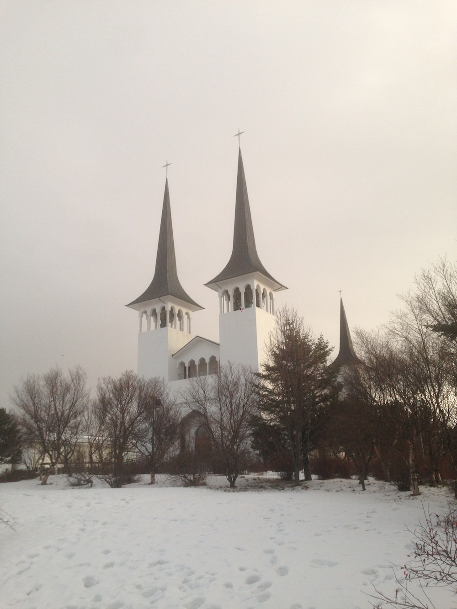
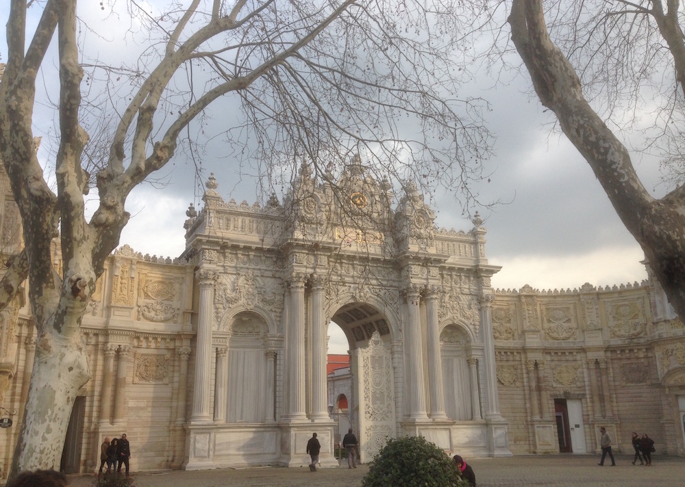
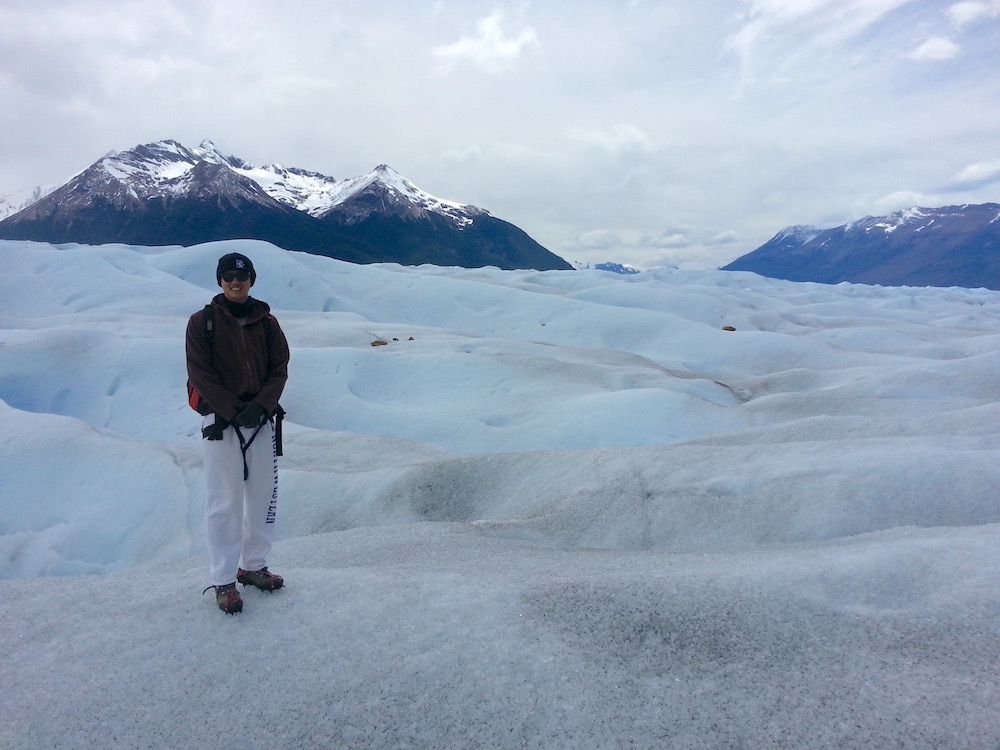
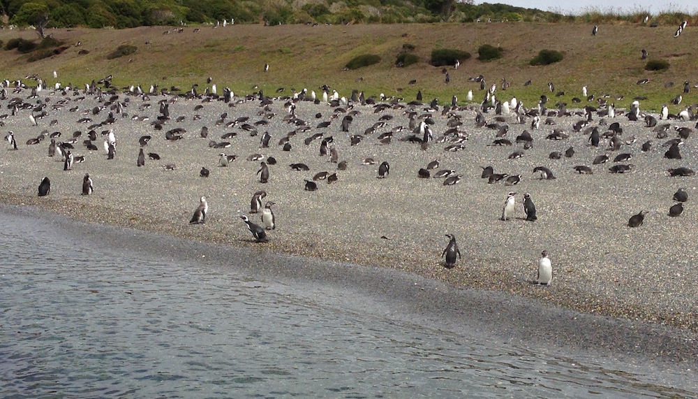

Tuofei (Francis) Chen
Electrical Engineer & PhD Candidate @ Stanford
I try to squeeze some time over winter every year to explore a bit of the world. Here're some pictures taken along the way!
Iguazu Falls
Teatro Colón
Boca Junior Homecourt
Interesting Building in Buenos Aires
Reykjavik Hallgrimskirja
Random Church in Reykjavik
Gulfoss
Iceland Ring Road
Matterhorn Switzerland

View from Deutches Museum
A blackboard of optimization at ETH
Dolmabahçe Palace Istanbul
Ruins on Crete Island
Recoleta Cemetery
Glacier Perito Moreno
Glacier Perito Moreno 2
Penguins of Ushuaia
Lighthouse at the end of the world
Reykjavik Street
Thorsmork Northern Light
Thorsmork (Thor's Land)
Reykjavik Government Building
Belgrade Nikola Tesla Museum
Blue Mosque Istanbul
Beartooth Highway

Navy Pier Chicago